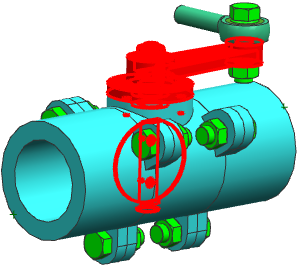

您将创建一个只在 INTERNAL_PARTS 组件组中选择并与 FLOW_ZONE 干涉的组件组。
在装配导航器中，INTERNAL_PARTS 节点下，选择所有12个组件节点。
不要选择 Interferes with Box FLOW_ZONE。
右击并选择任意匹配... 组件组。
任意匹配... 文件夹创建在 INTERNAL_PARTS 下。
右击任意匹配... 并选择应用来高亮显示组件。
新的任意匹配... 组选择了与原先 INTERNAL_PARTS 组相同的组件。
